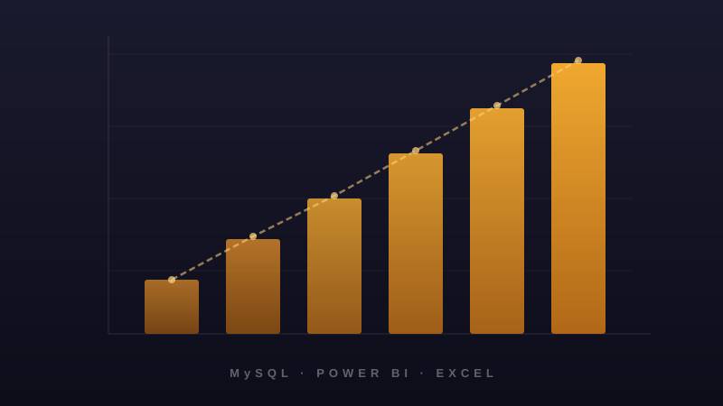
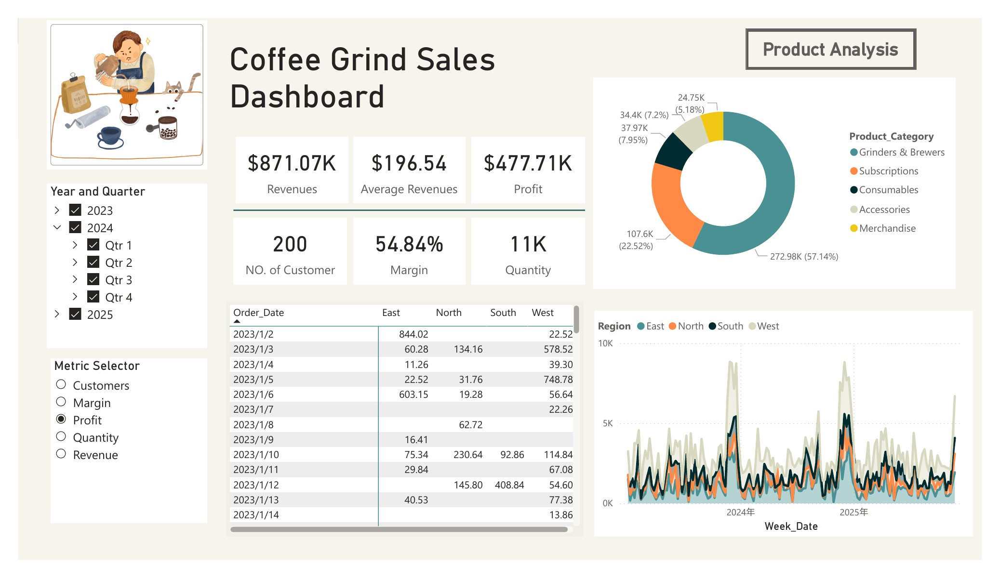

Business Analytics · Data & Reporting
Sales Performance &
Pricing Analysis
An end-to-end MySQL and Power BI workflow that transforms raw sales data into
an interactive dashboard — surfacing product performance, pricing effectiveness,
and profitability insights for business decision-making.

3
Data sources integrated
2023–25
Sales data coverage
1
Unified dashboard
E2E
Raw CSV to report
This project takes a multi-year sales dataset spanning orders, customers, and
products — and turns it into a single interactive Power BI dashboard that
stakeholders can use to answer real business questions without writing queries.
Note: this project was adapted from a guided tutorial. The data pipeline was
rebuilt using MySQL in place of SQL Server, and the dashboard layout was
independently redesigned.
Sales data was spread across multiple CSV files with inconsistent formats and
missing values. Without a structured data model, it was difficult to answer
questions like which products drive the most margin? or
where is pricing leaking value?
Stakeholders needed a single source of truth — one they could explore themselves
without depending on ad-hoc queries every time a business question came up.
-
Data ingestion
Import multi-year orders, customers, and products CSV files into MySQL.
-
Data cleaning
Handle missing values, fix inconsistent formats, and deduplicate records using SQL.
-
Data transformation
Engineer derived features including Week_Date and Profit to support time-series and profitability analysis.
-
Data modelling
Design normalised fact and dimension tables for orders, products, and customers.
-
SQL analysis
Write queries to extract key metrics — revenue, margin, average price, repeat-purchase rate.
-
Dashboard build
Connect Power BI to MySQL, create DAX measures, and design interactive visuals with drill-down and cross-filtering.
-
Insight delivery
Translate dashboard findings into clear, actionable pricing and performance recommendations.
MySQL
SQL
Power BI
DAX
Excel
Data modelling
KPI design
The Power BI dashboard gives stakeholders one place to answer the questions that
matter most: which product lines drive revenue and margin, where pricing is
underperforming, and how results trend over time.

Interactive Power BI dashboard with product performance matrix, pricing analysis, and trend views.
Key views include:
- Dynamic KPI selector — switch between key metrics without rebuilding the view
- Product category performance — identify top and bottom performers by revenue and margin
- Weekly trends — track sales and profitability over time
- Regional comparison — compare performance across regions
All visuals support drill-down and cross-filtering so stakeholders can explore the data themselves.
The analysis revealed that increasing COGS has reduced profitability, with
several products becoming structurally unprofitable — highlighting the need
for pricing adjustments or discontinuation decisions.
Stakeholders gained a single, interactive view of pricing effectiveness across
products — making it straightforward to spot underperforming items and refine
pricing strategy.
The underlying data model is reusable: new sales periods can be plugged into
the same structure without rework, making the dashboard a sustainable reporting
asset rather than a one-off analysis.